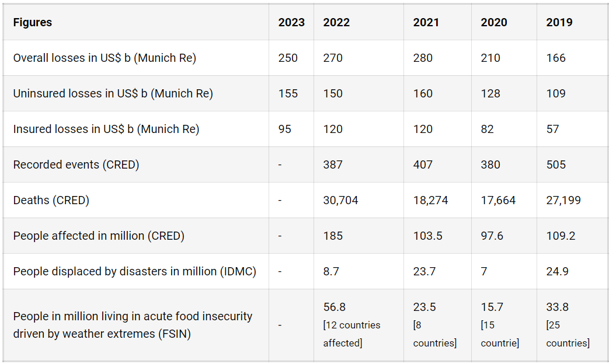
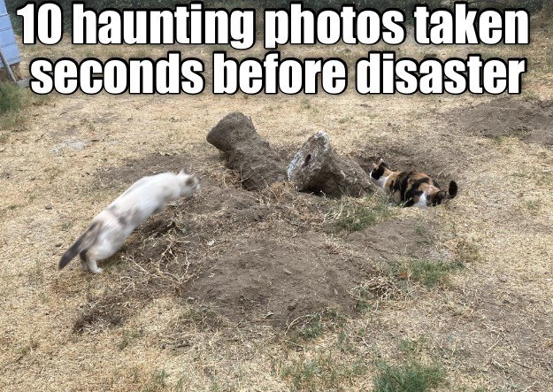
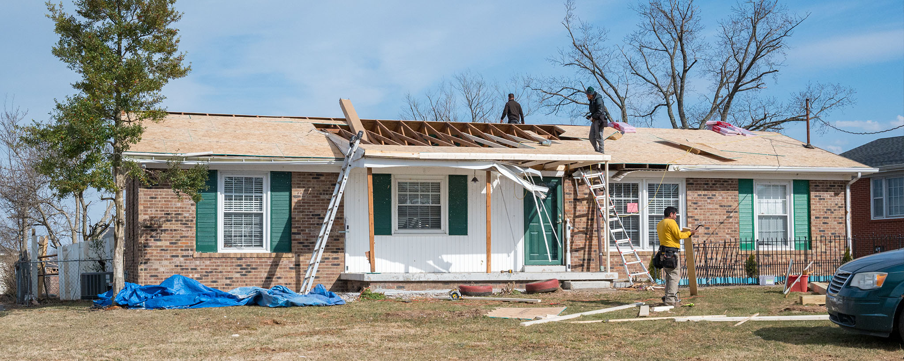

Welcome to Our Disaster Management includes ideas related to risk mitigation and Planning before,after or Duration of Disaster Hub
What is Disaster management ?
Disaster management is a comprehensive approach to preventing, preparing for, responding to, and aiding in emergency recovery efforts. It involves organizing and directing resources to cope with a disaster and coordinating the roles and responsibilities of responders.
Understanding disaster risk
Understand the concept of disaster risk, risk assessment, management strategies, and the importance of collaboration among stakeholders for effective disaster risk reduction.
Land resource conservation is of paramount importance for various reasons:
- Disaster losses & statistics: Conserving land resources helps protect ecosystems and the rich biodiversity that relies on them.Land conservation is vital for the preservation of biodiversity. Natural habitats, when conserved, provide a haven for a diverse array of plant and animal species. This biodiversity is not only essential for the ecosystems themselves but also for human survival, as it contributes to genetic diversity and ecological balanceWhile absolute economic losses are concentrated in high-income countries, the human cost of disasters falls overwhelmingly on low and middle-income countries.
- Business case for DRR: Investments in DRR not only curb disaster losses. They also yield economic, social and environmental benefits that enhance the well-being and resilience of countries and communities. The benefits of adaptation investments are often larger than the “avoided losses” that accrue when disaster does strike; this is what's called the triple dividend of resilience.
Components of risk
Disaster risk is the consequence of the interaction between a hazard and the characteristics that make people and places vulnerable and exposed.
- Disaster Risk: Disaster risk is expressed as the likelihood of loss of life, injury or destruction and damage from a disaster in a given period of time.
- Hazard: A hazard is a process, phenomenon or human activity that may cause loss of life, injury or other health impacts, property damage, social and economic disruption or environmental degradation. Hazards may be natural, anthropogenic or socionatural in origin.
- Vulnerability: The characteristics determined by physical, social, economic and environmental factors or processes which increase the susceptibility of an individual, a community, assets or systems to the impacts of hazards.
- Exposure: The situation of people, infrastructure, housing, production capacities and other tangible human assets located in hazard-prone areas.
Risk drivers
Risk is influenced by the decisions we make. From climate change to poor urban planning, it is critical to understand and address risk drivers to curb disaster risk
- Climate change drives disaster risk:Climate change can increase disaster risk in a variety of ways - by altering the frequency and intensity of hazard events, affecting vulnerability to hazards, and changing exposure patterns.
- Environmental degradation: Environmental degradation is both a driver and consequence of disasters, reducing the capacity of the environment to meet social and ecological needs.
- Globalized economic development: Globalized economic development has resulted in increased polarization between the rich and poor on a global scale. This has increased vulnerability to disasters in some cases, whilst increasing exposure to hazards in others as more (and often more valuable) assets are developed in hazard-prone areas.
- Weak governance: Weak governance zones are investment environments in which public sector actors are unable or unwilling to assume their roles and responsibilities in protecting rights, providing basic services, public services, and ensuring that public sector management is efficient and effective. These “government failures” lead to broader failures in political, economic and civic institutions that are referred to as weak governance.
Key concepts
From deterministic and probabilistic risk to intensive and extensive risk, explore key concepts in disaster risk reduction.
- Anticipatory action:Anticipatory action allows humanitarians and affected communities to make informed decisions ahead of a humanitarian crisis – saving time and money; preventing displacement, disease, loss of livelihood; and preserving the dignity of those affected.
- Capacity: Capacity refers to all the strengths, attributes and resources available within a community, organization or society to manage and reduce disaster risks and strengthen resilience.
- Intensive and extensive risk: Extensive risk is used to describe the risk associated with low-severity, high-frequency events, mainly but not exclusively associated with highly localized hazards. Intensive risk is used to describe the risk associated to high-severity, mid to low-frequency events, mainly associated with major hazards.
- Resilience: In the context of disaster risk, the ability of a system, community or society exposed to hazards to resist, absorb, accommodate, adapt to, transform and recover from the effects of a hazard in a timely and efficient manner, including the preservation and restoration of its essential basic structures and functions through risk management
Disaster losses & statistics
While absolute economic losses are concentrated in high-income countries, the human cost of disasters falls overwhelmingly on low and middle-income countries.
2023 snapshot
- US$ 250 billion in overall losses (Munich Re)
- US$ 155 billion in uninsured losses (Munich Re)
- US$ 95 billion in insured losses (Munich Re)
2022 snapshot
- US$ 270 billion in overall losses (Munich Re)
- US$ 120 billion in uninsured losses (Munich Re)
- US$ 150 billion in insured losses (Munich Re)
- 387 recorded events (CRED)
- 30,704 deaths (CRED)
Over the last 30 years, an estimated USD 3.8 trillion worth of crops and livestock production has been lost as a result of disaster events, corresponding to an average loss of USD 123 billion per year or 5 percent of annual global agricultural GDP. Lower-income and lower-middle-income countries sustained the highest losses due to extreme events, up to 10 percent of their agricultural GDP. Losses in SIDS account for about 7 percent of their agricultural GDP (FAO, 2023). 14.9 million excess deaths were associated with the COVID-19 pandemic in 2020 and 2021. Excess mortality includes deaths associated with COVID-19 directly (due to the disease) or indirectly (due to the pandemic’s impact on health systems and society).

Planning before disaster
- Risk Assessment: Identify potential hazards and vulnerabilities in the area. This involves analyzing past incidents, geographical features, population density, infrastructure, and other factors that may contribute to disaster risk.
- Preparedness Planning: Develop emergency response plans, evacuation procedures, and communication strategies. This includes establishing emergency shelters, evacuation routes, and stockpiling necessary supplies such as food, water, medical equipment, and emergency kits.
- Community Engagement: : Engage with local communities to raise awareness about potential hazards, educate residents on preparedness measures, and foster community resilience. This may involve conducting training sessions, drills, and simulations.
- Infrastructure and Building Codes: Implement and enforce building codes and zoning regulations to ensure the resilience of infrastructure against disasters such as earthquakes, floods, hurricanes, etc. This includes constructing buildings to withstand potential hazards and ensuring critical infrastructure (such as hospitals, schools, and utilities) is resilient.

Planning After disaster
- Assessment and Recovery: Conduct damage assessments to evaluate the impact of the disaster on infrastructure, communities, and the environment. Develop recovery plans and allocate resources to support rebuilding efforts, restore essential services, and facilitate economic recovery.
- Psychosocial Support: Provide psychosocial support and counseling services to individuals and communities affected by the disaster. This includes addressing trauma, grief, and mental health needs, and fostering community resilience and social cohesion.
- Long-Term Planning and Mitigation: Use lessons learned from the disaster to update and improve disaster preparedness and mitigation strategies. This may involve implementing measures to reduce future risk, such as land-use planning, infrastructure upgrades, and community-based adaptation initiatives.

Planning during disaster
- Emergency Response: Activate emergency response plans and mobilize resources to address immediate threats and provide assistance to affected populations. This includes deploying first responders, search and rescue teams, medical personnel, and coordinating with local authorities and emergency services.
- Communication and Coordination: Maintain clear and effective communication channels between response agencies, government authorities, and the public. This involves disseminating timely and accurate information about the disaster, evacuation orders, shelter locations, and available assistance.
- Evacuation and Sheltering:Coordinate evacuation efforts and provide shelter and assistance to displaced individuals. This may involve establishing temporary shelters, providing transportation assistance, and ensuring the safety and well-being of evacuees.